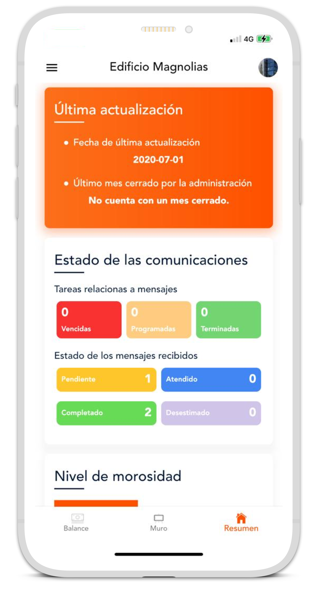

Información a tu alcance
Consulta en línea información administrativa, financiera y de mantenimiento de tu comunidad.
TECNOLOGÍA PARA TU COMUNIDAD
Tu edificio, su información y tu comunidad, más conectados.
La plataforma web y móvil que acompaña la gestión de edificios y condominios con herramientas para administradores y residentes.

BENEFICIOS PARA TU EDIFICIO
Consulta en línea información administrativa, financiera y de mantenimiento de tu comunidad.
La app facilita la comunicación y la coordinación de asuntos compartidos desde donde estés.
Presupuestos, registro de compras y ventas, caja chica y reportes financieros para apoyar la administración.
Conserva y consulta la información histórica de la comunidad para dar continuidad a su gestión.
PARA ADMINISTRADORES
Centraliza información y utiliza las herramientas financieras para acompañar el trabajo administrativo del edificio.
PARA RESIDENTES
Accede a información y comunícate desde la plataforma o la aplicación móvil, según los permisos de tu cuenta.
TAMBIÉN EN TU CELULAR
Descarga Vecinos 360 e ingresa con el acceso proporcionado por la administración.
Consulta con tu administrador para obtener tu cuenta y conocer las funciones habilitadas para tu edificio.
Contactar con ADMINIO ↗
ADMINIO + TECNOLOGÍA
Conversemos sobre las necesidades de tu edificio.
Beneficios y funciones resumidos de la web oficial de Vecinos 360. Las funciones disponibles dependen del servicio y los permisos habilitados.